KT808_50-34381 Manual
A sash machine with two motors, two screwing units, a revolver, and an X axis for mounting hinges onto the profile.
Manual Work Page
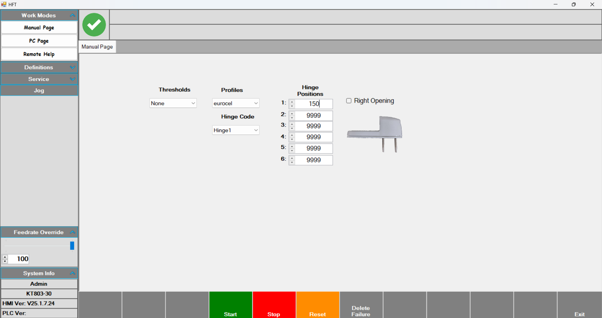
Manual Work Page: The page where jobs are loaded manually. By selecting the profile and hinge, operations can be performed at the desired position.
- First, select Thresholds and Profiles.
- Next, select the predefined hinge from Hinge Code.
- Enter the desired position value for the hinge under Hinge Positions.
- In Right Opening, choose whether the hinge opens to the right or left.
•After entering all these parameters, press Start and then press the foot pedal to begin. On the first press, the front presser that the profile rests against comes out; on the second press, the centering pressers come out. On the third press, the three pressers that clamp the profile from the front come out, and the motor that will perform the drilling moves to the position specified in Hinge Positions. When the drilling is complete, the motor group waits on the right. After drilling, the operator places the hinge and presses the foot pedal again. At this stage, the screwing operation is performed. Once screwing is complete, the motor group goes to the ground position and the process is finished.
Espagnolette on sash machines
From the Lock Gears section on the left side of the page, select a predefined gear. Enter the Handle position (the position of the door handle on the door) and the profile length parameters. After these values, select the profile and press Start. With the middle foot pedal, the pressers come out and on the last press the table becomes inclined. Then press the left pedal to make the left punch cut. Press the middle pedal to position the axis. Press the right pedal to make the right punch cut and finish the operation.
PC Page
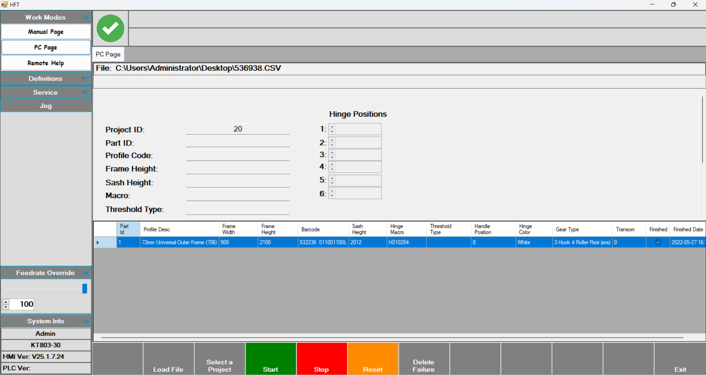
PC Page: This is the operator’s working page.
- On this page, after pressing Start, scan the barcode. After the barcode is scanned, the parameters related to the operation to be performed are filled in. The table at the bottom of the screen lists the scanned jobs.
- From the Feedrate Override section on the left side of the screen, you can decrease the processing speed.
Remote Help
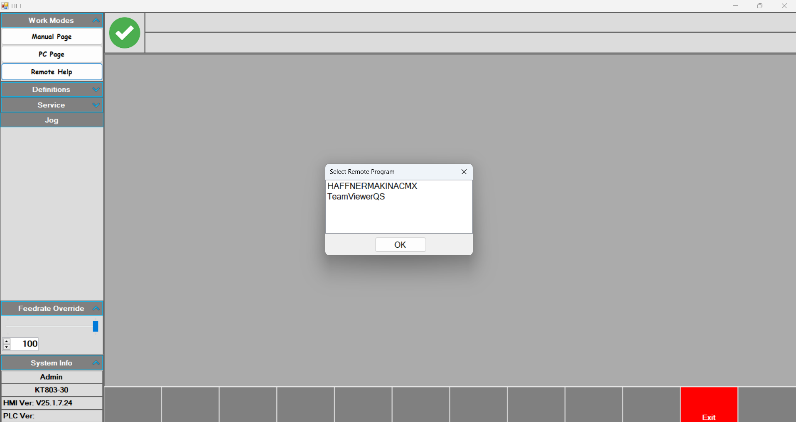
Remote Help: A remote connection is made via this page to receive support from authorized personnel.
Profiles
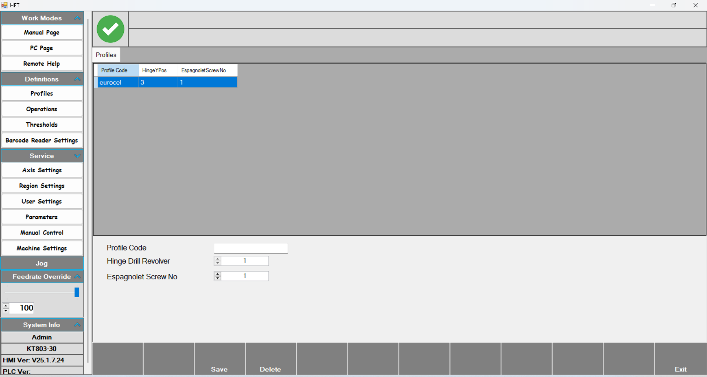
Profiles: The page where the profiles to be processed are defined.
- Profile Code: The name given to the profile to be defined.
- Hinge Drill Revolver: The revolver level at which the tool group will perform the operation.
- Espagnolette Screw No: KT-803 frame machines do not have an espagnolette.
Operations
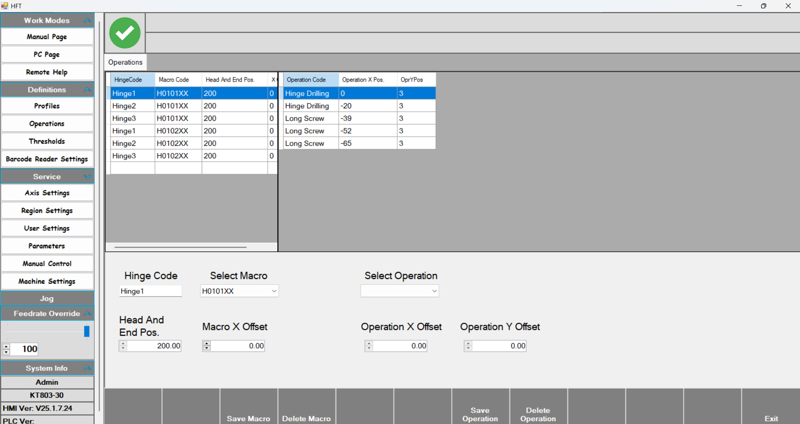
Operations: The hinge definitions to be used are created on this page.
- With Hinge code, a name is given to the hinge. With Select macro, choose the hinge’s right or left opening. With Save macro, the defined macro is saved; with delete macro, it is removed.
- Head and end pos :
- Macro X offset : ?
- Select Operation: The operation to be performed is selected here. There are four options: Hinge Drilling (left motor), Long Screw Drilling (right motor), Long screw (left screwing), and Short screw (right screwing).
- Operation X offset sets the location of the drilling and screwing operations. At this stage, measurements are entered based on the hinge. The first drilling operation is considered 0, and the measurements taken from the hinge with a caliper are entered relative to this zero.
- Operation Y offset determines the revolver level at which the operation will be performed.
Thresholds
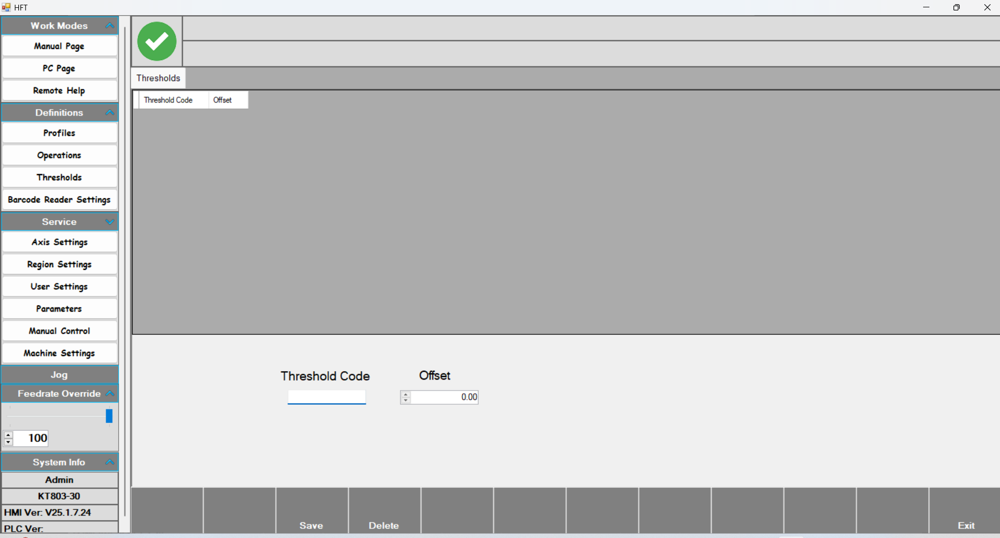
This page is available only on frame machines.
Lock Gear
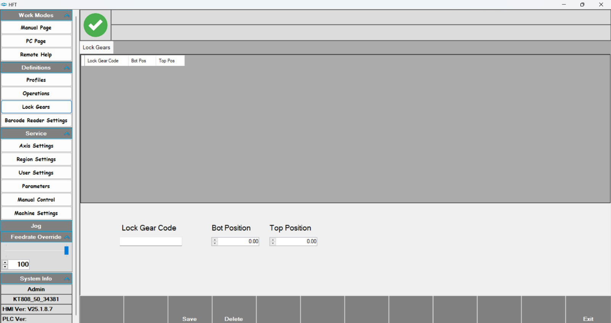
This page is available only on sash machines. It is related to the espagnolette.
Barcode Reader Settings
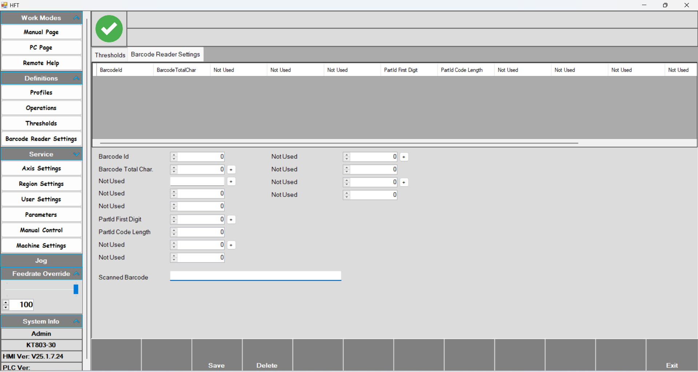
Axis Settings
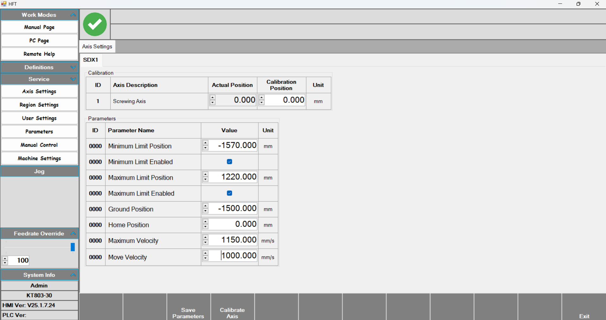
Axis Settings: The SDX1 axis is calibrated using the parameters on this page.
- In the Calibration table, enter the calibration position value to calibrate the axis. With Actual position, the instantaneous position value is displayed.
- Minimum Limit position: The minimum value the axis can travel to.
- Minimum Limit Enabled: Enables the minimum travel limit of the axis.
- Maximum Limit position: The maximum value the axis can travel to.
- Maximum Limit Enabled: Enables the maximum travel limit of the axis.
- Ground position: The position where the tool group goes to wait before starting and after finishing the process.
- Maximum Velocity: The maximum speed the axis can reach.
- Move Velocity: The movement speed of the axis.
Region and Language
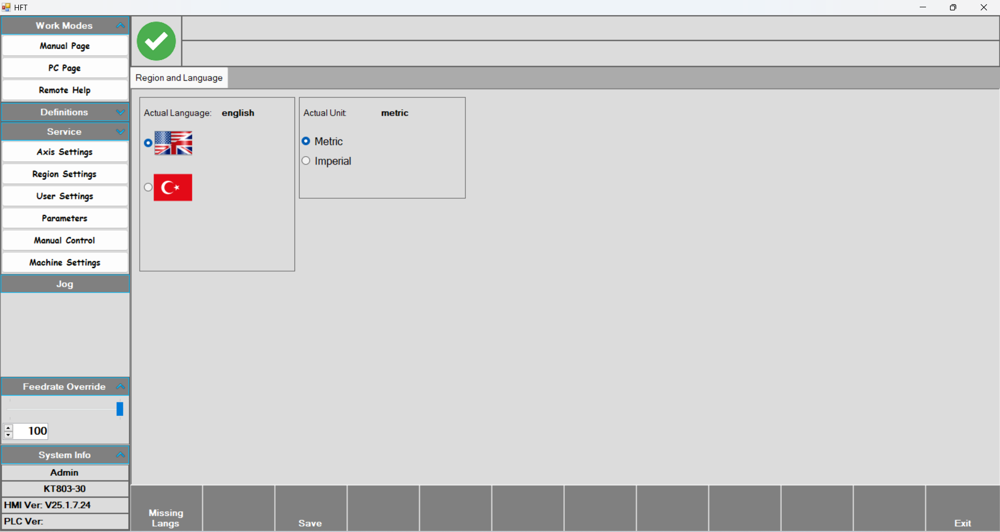
Region and Language: After selecting the desired language or unit of measurement, press Save and the changes are stored.
User Settings
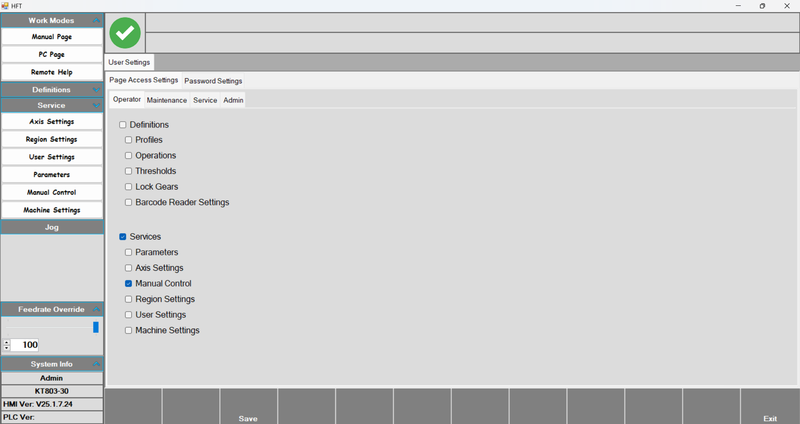
Manual Control
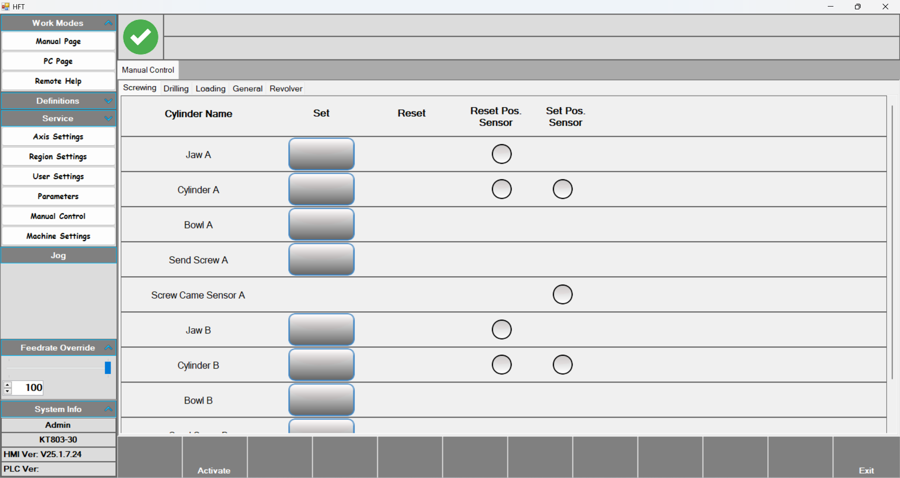
Manual Control: After pressing the Activate button, press the desired output to activate it. Press again to return it to its previous state.
Parameters
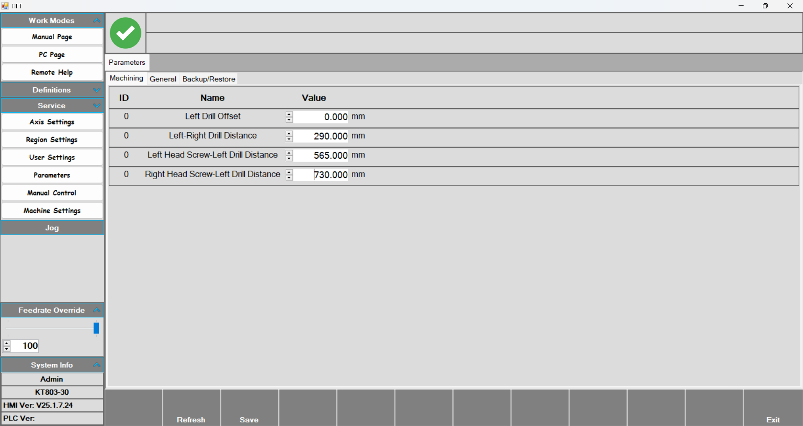
- Parameters: This page contains the offset values related to the motors and screwing groups in the tool group.
- Left Drill Offset: This is the first motor of the tool group. Since it is on the far left, this motor is taken as zero.
- Left-Right Drill Distance: The distance between the two motors.
- Left-Head Screw – Left Drill Distance: The distance between the first motor and the first screwing group.
- Right Head Screw-Left Drill Distance: The distance between the first motor and the second screwing group.
Revolver
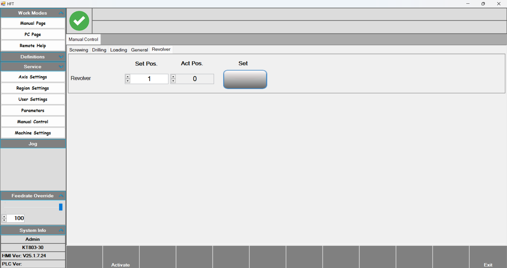
- This is the section where the revolver level is set on the Manual Control page. Enter the desired value into the Set Pos parameter and press the Set button. The revolver then moves to the desired level. You can see the current revolver level with the Act.Pos value.
Machine Settings
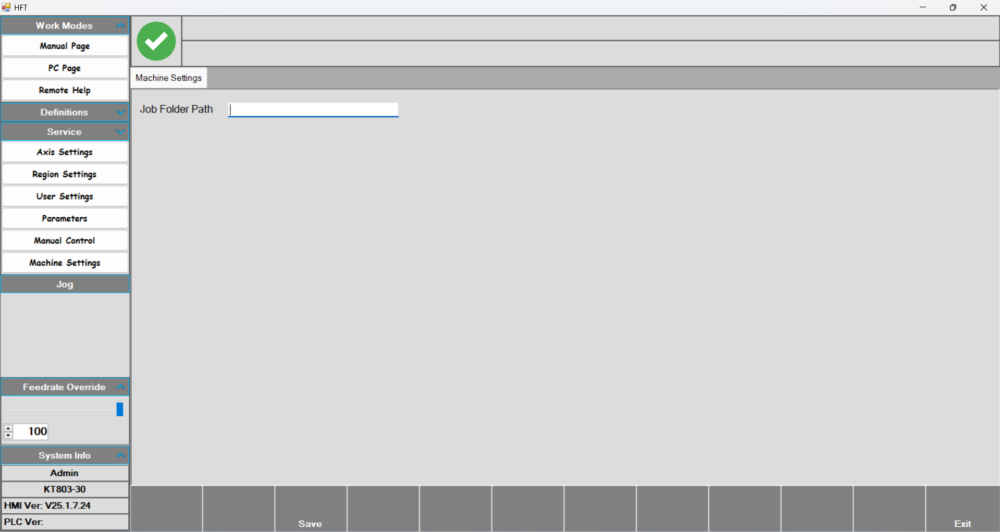